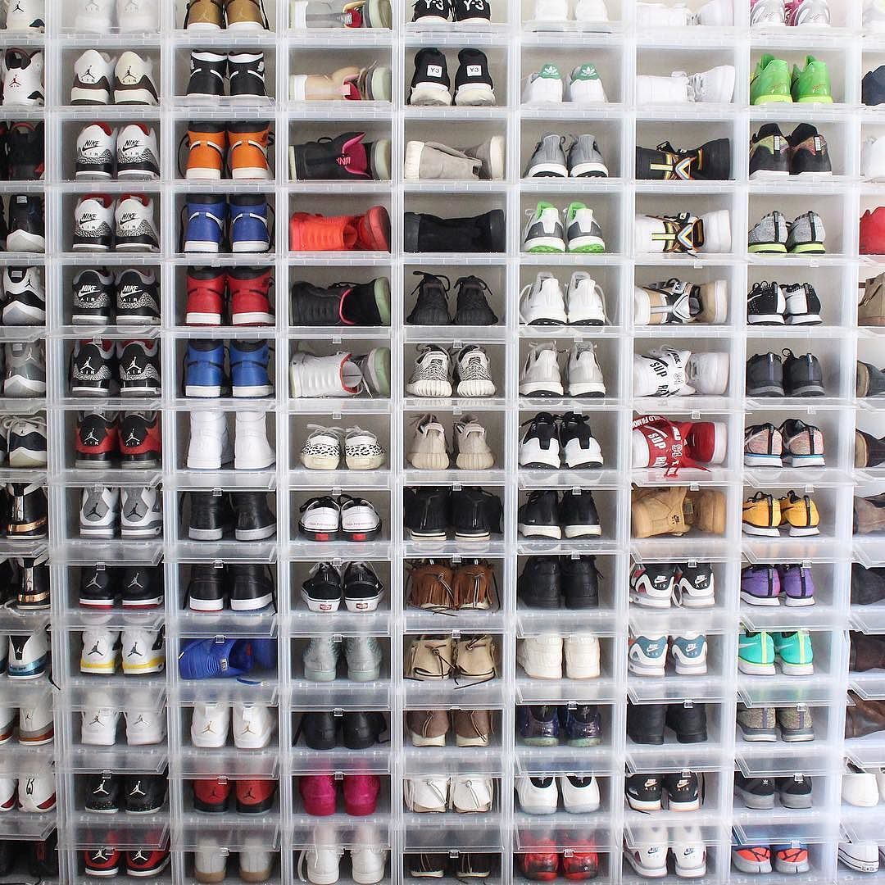

About
I'm currently a sophomore student at Brooklyn College that is majored in Computer Science. I'm passionate about languages and sneaker culture. For now, the languages that I've acquired include English, Mandarin, Cantonese, Japanese, and Spanish. I ' m also a huge enthusiast of sneaker culture. I've been collecting sneakers since high school. The reason that motivates me to major in Computer Science might be because I've been contacting computers from a very young age and that I'm a game lover.


Project
Below demonstrates the projects that I've worked on CISC 3115:
Top Streaming Music Artist: A project that read in a file of the top streaming music artist in Spotify and converts those data into the format of the number of times the artist appeared on the list and also sorted it by their names alphabetically.
Music Playlist: A project that read in multiples files of the top streaming music with the artist in Spotify and convert those data into a playlist with the possibility of manipulating those data with a song history list.
Movie Titles: A project that read in a CSV file of movie titles and parse that data into a binary search tree. With that data, we are required to find movie titles between the range of the two movie titles that the user provides to the program in a binary search tree.
Movie Genres: A project that read in a CSV file of movie genres and parse that data into a LinkedList. With that data, we are required to answer three questions:
- How many movies are classified under each genre?
- How many for the whole data set versus the most recent 5 years?
- How many movies of each genre came out each decade?